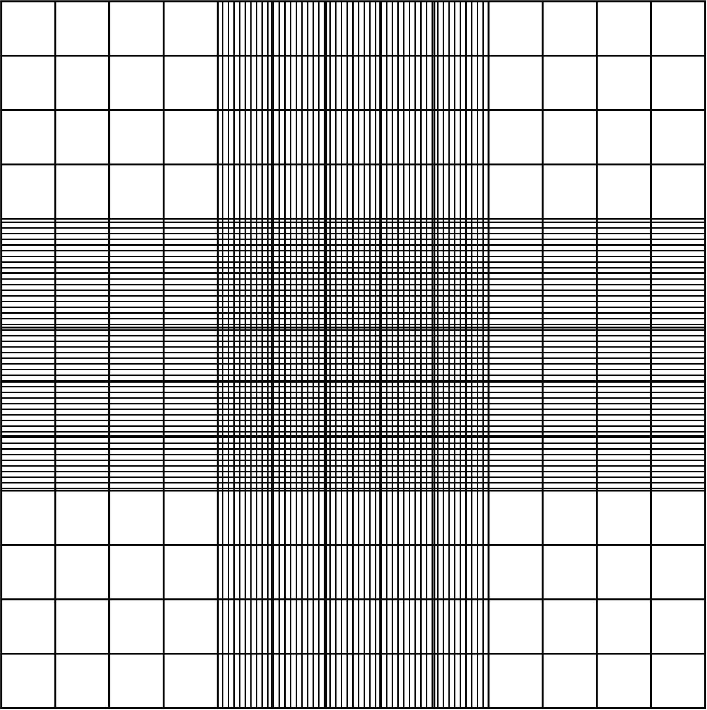

Dieses Tool dient zur Berechnung von Zellzahlen,
Zellkonzentrationen und Suspensionsvolumina für
verschiedene Kulturgefäße (Ibidi Slides, Well-Platten,
individuelle Formate und EM-Grids).
Die Berechnungen stellen Näherungswerte dar und sollen
experimentelle Planung und Vorbereitung unterstützen.
Tipp: Sind deutlich weniger als 20 oder mehr als
200 Zellen pro Großquadrat vorhanden, sollte die Probe
entsprechend konzentriert bzw. verdünnt und erneut gezählt
werden.

Merke:
Die Neubauer Improved Zählkammer besitzt eine definierte
Kammerhöhe von 0,1 mm. Dadurch kann aus den gezählten
Zellen direkt die Zellkonzentration der Suspension
bestimmt werden.
Die Kammer wird über Kapillarkräfte befüllt. Üblicherweise
genügt ein kleiner Tropfen von etwa 10 µl bis 20 µl
Zellsuspension, um den Messbereich vollständig zu füllen.
Die Suspension sollte homogen gemischt werden, bevor sie
aufgetragen wird, um Sedimentation der Zellen zu vermeiden.
Die optimale Zelldichte hängt stark vom Zelltyp ab.
Adhärente Zelllinien werden häufig mit
50 bis 500 Zellen/mm² ausgesät.
Die hier berechneten Werte dienen als Ausgangspunkt und
sollten experimentell optimiert werden.
Folgende Werte für 3T3 Fibroblasten haben sich als zuverlässig herausgestellt:
Über diese Anwendung
Anleitung zur Zellzählung
✅ Obere Linie mitzählen
✅ Linke Linie mitzählen
❌ Untere Linie nicht zählen
❌ Rechte Linie nicht zählen
Neubauer-Zählkammer
Welche Seeding-Dichte sollte ich verwenden?
Zellkonzentration = Zellzahl / Kulturfläche
Beispiel:
Rechteckige Wells:
Fläche = Breite × Länge
Kreisförmige Wells:
Fläche = π × (Durchmesser/2)²
Die Fläche wird bei jeder Änderung der Geometrie automatisch neu berechnet.
Für EM-Grids existiert keine definierte Kulturkammer. Die Flüssigkeit wird als frei liegender Tropfen modelliert.
Zur Volumenschätzung wird eine Halbkugel angenommen.
Volumen Halbkugel:
V = 2/3 × π × r³
Die tatsächliche Tropfenform hängt von der Oberflächenspannung, dem Kontaktwinkel und der Grid-Beschichtung ab.
Die Ergebnisse basieren auf geometrischen Modellen und Herstellerangaben der Kulturgefäße.
Tatsächliche Zelladhäsion, Pipettierverluste, Sedimentation, Well-Randeffekte oder Verdunstung werden nicht berücksichtigt.